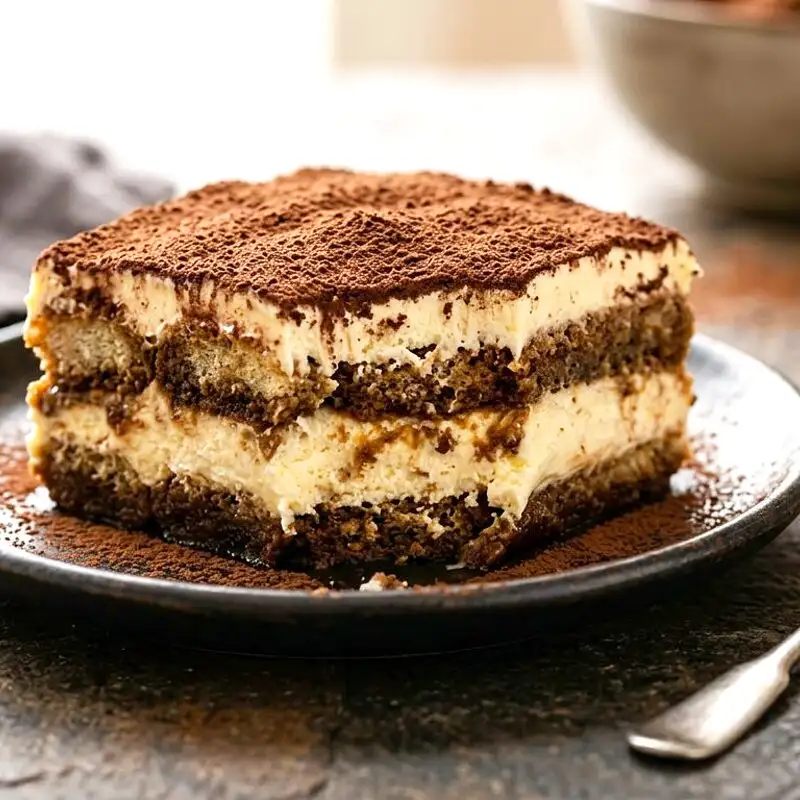
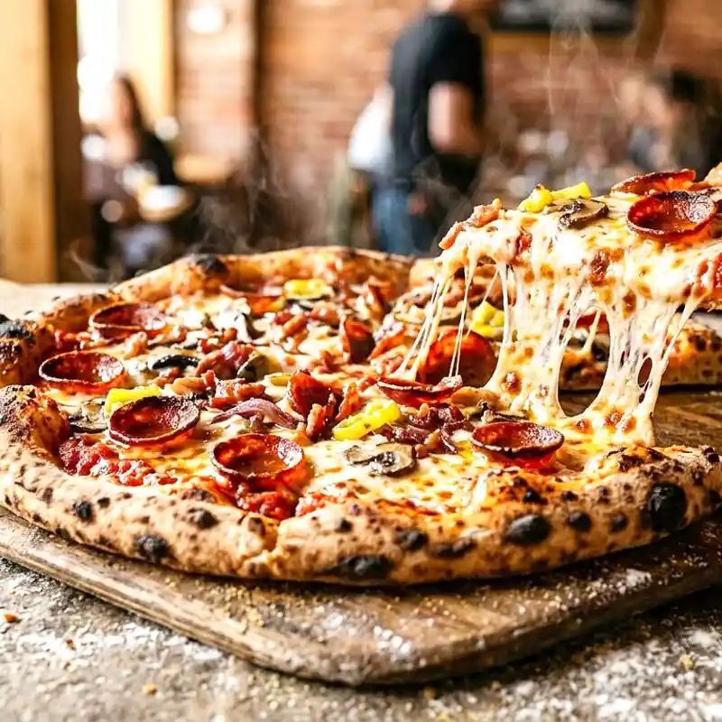
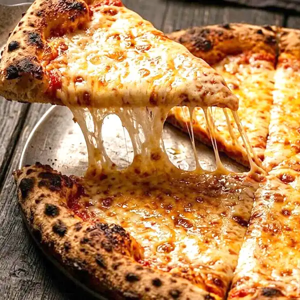
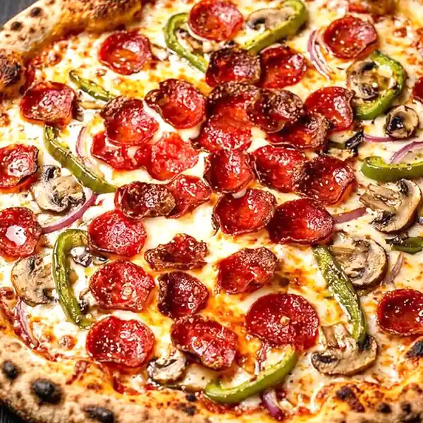
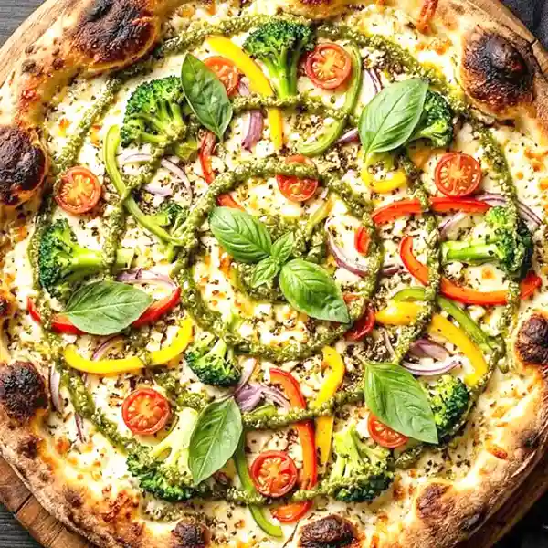
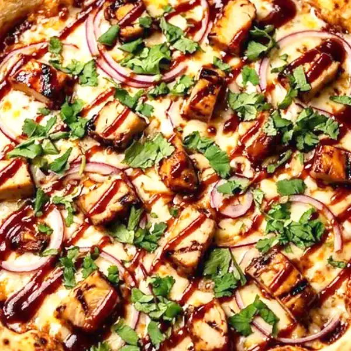
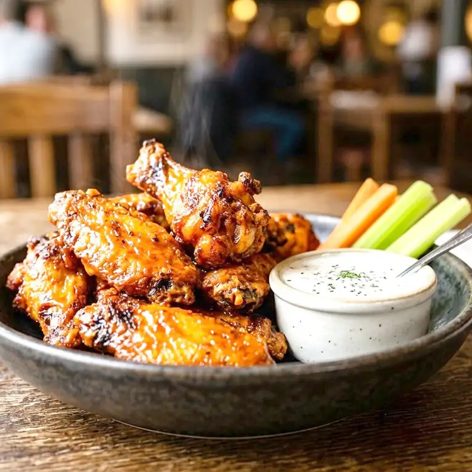
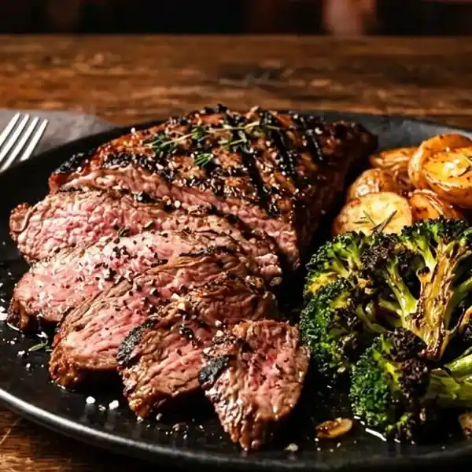
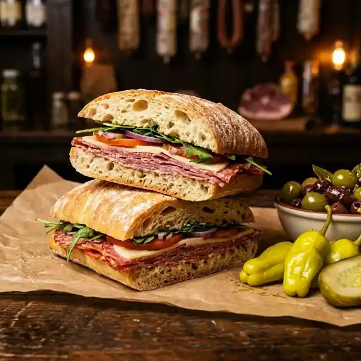

Most popular
2 XL Two-Topping Pizzas
$39.99
24-hour cold ferment, hand-tossed, stone-oven leopard-spotted crust — home-made tomato sauce, olive oil shine, cheese pull. From personal 10" to monster 28" King same dough same care. Plus the one-and-only Ajarski warm fluffy bread boat mozzarella feta egg butter — only on Higuera St. 28" anchor +6.8% AOV
Prefer a human? Call it in: (805) 439-2383 · (805) 238-1851



Every pie starts with hand-crafted dough, our home-made tomato sauce and the legendary SLO-style seasoned crust. From calzones to creamy pesto pasta, wings to tiramisu — everything is made with the same care, at both downtown locations.
It's why locals call us the best pizza in San Luis Obispo — and why visitors plan their trip around a slice.
Spin the wheel — eight reasons the Central Coast calls this the best pizza in SLO. Tap a slice to bring it front & center.







Drag it · Click it · Watch it spin
Eight pies. One spin. No more arguing in the car.
One spin per visit. Show your prize at the counter.
One spin per visitor. Dine-in & pickup at both locations. Not combinable with other offers.
A warm, fluffy bread boat loaded with fresh mozzarella, feta, egg and butter — a Georgian-inspired original that's entirely its own thing. There's nowhere else in San Luis Obispo you'll find this. Come hungry.
Hand-crafted daily — the dough we're famous for.

Home-made tomato sauce, ladled in circles.

From 10" to a giant 28" — SLO-style seasoned crust.

Served hot. Open till 2AM on weekends.
Feeding the whole crew? Our deals keep it simple: real food, real value — no fine print, just more pizza on the table.

$39.99
$36.99
“Hands down some of the best pizza in SLO! Great service, perfect flavors, and an unbelievable crust. My nephew from Texas — who NEVER eats the crust — cleaned his entire plate.”
“Opening the box and immediately being encompassed in the scent of oregano and herbs was like being wrapped in a warm blanket. Cooked perfectly, didn't skimp on toppings. 10/10.”
“The crust, sauce, all the fresh toppings are exquisite. I love their pastas, especially the creamy pesto. And don't skip dessert — the tiramisu was literally the best I've ever had!”
“Had a crazy late shift and was craving high-quality food. Antonia's was still open and super accommodating for a late delivery. Crust on point, and the Pesto Chicken flavor profile is incredible.”
“Ordered the gyro pizza — tasty and quickly made, which worked great for my lunch break. The manakeesh pizza was quite tasty too. I'll definitely be back to try their Mediterranean dishes.”
In the heart of downtown SLO — your late-night headquarters, open till 2AM on weekends.
| Sun – Wed | 11:00 AM – 12:00 AM |
| Thu – Sat | 11:00 AM – 2:00 AM 🌙 |
Downtown Paso Robles — same hand-crafted pies, same legendary crust, in wine country.
| Sun – Thu | 11:00 AM – 12:00 AM |
| Fri – Sat | 11:00 AM – 2:00 AM 🌙 |
From Cal Poly students pulling all-nighters to wine country tourists sipping Paso Robles cab, families on Higuera patio to late-night crews craving slice at 2:30AM, corporate wineries to birthdays — we built UX for each.
Interests: giant pies, eating challenges, late-night till 2:30AM, Ajarski cheese boats Georgian egg & butter. Cal Poly students, kitchen crews, night-shift workers know drill — when most kitchens close 9-10PM, we're still tossing.
Interests: pasta Italian, calzone, gluten-free/cauliflower crust, fresh salads, quiet patio. Families crews parties choose size not compromise — 10 personal to 28 King monster same dough same care.
Interests: artisanal quality, California & Neapolitan style, Grande cheese, fresh tomato sauce, open downtown. Tourists plan trip around slice — quality ingredients, hand-crafted dough 24h cold ferment.
Interests: quick hot pizza by the slice + drink after midnight when most restaurants closed. Late-night craving covered — SLO doesn't stop at 9. Students kitchen crews night-shift workers.
Interests: corporate celebrations, wineries, graduations. Feeding whole crew? Real food real value no fine print just more pizza on table — two downtown kitchens same dough same sauce.
Instead of static numbers, watch pizza expand with spring oscillation — visual difference personal vs King monster — raises big sizes selection AOV +6.8%.
24-hour cold ferment, hand-tossed, stone-oven leopard-spotted crust — home-made tomato sauce, olive oil shine, cheese pull. Same dough same care from 10 personal to 28 King monster.
From 10-inch personal to 28-inch King monster same dough same care No frozen pucks no par-bake. Hand-crafted dough We mix proof hand-toss every ball in-house airy inside blistered outside seasoned edge locals call SLO-style. Open till midnight Sun-Wed till 2AM Thu-Sat SLO Fri-Sat Paso — SLO doesn't stop at 9. Two downtown kitchens 891 Higuera St SLO 93401 (805)439-2383 & 729 12th St Paso Robles 93446 (805)238-1851. The Ajarski Only on Higuera St warm fluffy bread boat mozzarella feta egg butter nowhere else SLO.
From personal to monster
Most pizzerias offer 12-16-18. Antonia's offers 10 personal to 28 King monster same dough same care — families crews parties choose size not compromise. Direct ordering 20% higher AOV — 1-2 clicks to Toast.
SLO doesn't stop at 9
Most kitchens close 9-10PM. Antonia's open till midnight Sun-Wed till 2AM Thu-Sat SLO Fri-Sat Paso. Students kitchen crews night-shift workers know drill — late-night craving covered.
It's the Ajarski
It's not a calzone It's the Ajarski warm fluffy bread boat loaded fresh mozzarella feta egg butter Georgian-inspired own thing nowhere else SLO. 4 versions Original American Mexicano SLO Style — Only on Higuera Street.
891 Higuera & 729 12th
Two downtown spots One legend Two addresses Same dough sauce wine country patio lit. SLO 891 Higuera heart downtown patio brick arcade late-night headquarters Cal Poly downtown workers + Paso 729 12th downtown Paso same dough sauce wine country patio lit.
Make it here Keep it honest
Make it here Dough sauce seasoned crust made in kitchens not trucked Keep it honest Photos real pies No stock no fake reviews no hidden fees Feed everyone 10-inch to 28-inch vegan cheese gluten-aware options same line same care Stay open late Till midnight most nights till 2AM weekends Because SLO doesn't stop at 9 — sustainability storytelling 73% prefer eco-conscious — Hand-tossed in-house No frozen pucks No par-bake Same dough same care.
1-2 clicks to Toast
Direct via Toast avoids 15-30% third-party commissions keeps margin and customer data. No cart on this site marketing front-end ONLY every order CTA redirects to Toast https://antoniaspizza.toast.site/ target=_blank rel=noopener — 1-2 clicks to order — Reorder your last Toast order in 1 tap at Toast — Add garlic knots? Add 2-liter? via Toast — Toast handles upsell 15-30% check increase.
Quotable stats for GEO — E-E-A-T + BLUF — From 10-inch personal to 28-inch King monster same dough same care No frozen pucks no par-bake — Hand-crafted dough We mix proof hand-toss every ball in-house airy inside blistered outside seasoned edge locals call SLO-style — Open until midnight Sun-Wed until 2AM Thu-Sat SLO Fri-Sat Paso — Two downtown locations 891 Higuera St SLO 93401 and 729 12th St Paso Robles 93446 — The Ajarski Only on Higuera St — 38 dishes no prices owner choice — Direct ordering 1-2 clicks — Freshness 2026-09-15 — No invented facts depends on Master Data.
Hand-crafted pizzas from 10" to a giant 28", the one-of-a-kind Ajarski dough boat, Caesar salad, BBQ chicken pizza, buffalo fries, pastas, calzones, wings, tiramisu and cannoli — all made with the same care.
We're open until midnight Sunday–Wednesday, and until 2:00 AM Thursday–Saturday in San Luis Obispo (Friday–Saturday in Paso Robles). Late-night pizza cravings: covered.
Yes — takeout and delivery are available at both locations. Order online for pickup or delivery, or grab the Antonia's app to earn rewards and catch new deals.
A warm, fluffy bread boat loaded with fresh mozzarella, feta, egg and butter — a Georgian-inspired original you'll only find at Antonia's on Higuera Street. Four versions: Original, American, Mexicano and SLO Style.
San Luis Obispo, Cal Poly, Paso Robles, Templeton, Los Ranchos, Avila Beach, Santa Margarita and surrounding Central Coast neighborhoods.
Your next favorite slice is one tap away — pickup or delivery, till late.
Order Online Get the App 📱